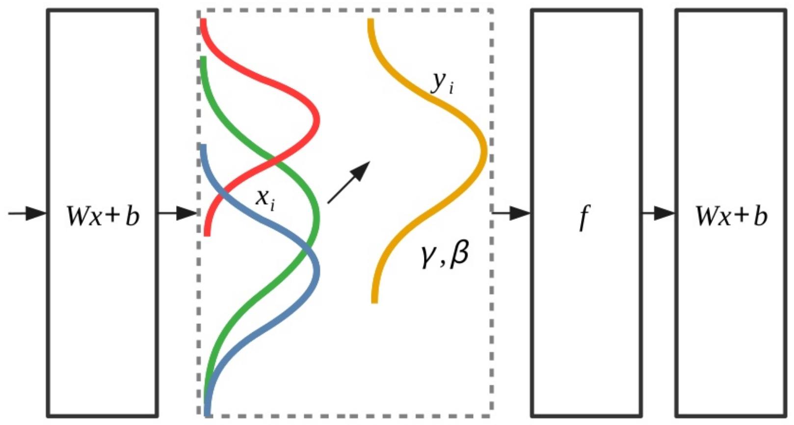

<?xml version = "1.0" encoding = "UTF-8"?>
<xsl:stylesheet version = "1.0" xmlns:xsl = "http://www.w3.org/1999/XSL/Transform">
<xsl:template match = "/"> 
<!doctype html>
<html lang="en">

	<head>
		<meta charset="utf-8">
    
		<title>Lecture 1 - NNML 2020</title>
		<meta name="description" content="NNML">
		<meta name="author" content="Emre Neftci">

		<meta name="apple-mobile-web-app-capable" content="yes">
		<meta name="apple-mobile-web-app-status-bar-style" content="black-translucent">

		<link rel="stylesheet" href="dist/reset.css">
		<link rel="stylesheet" href="dist/reveal.css">
		<link rel="stylesheet" href="nmilab.css">

		<!-- Theme used for syntax highlighted code -->
		<link rel="stylesheet" href="plugin/highlight/monokai.css">

    <script src="jquery.js"></script> 
    <script> 
    $(function(){
      $("#sdlides").load("slides_1_inner.html"); 
    });
    </script> 

  </head>    

	<body>
		<div class="reveal">
			<div class="slides">
<section>
<section data-markdown data-vertical-align-top data-background-color=#B2BA67><textarea data-template>
    <h1> Lecture 6: Modern ConvNets for Classification and Segmentation <br/> </h1>

</textarea></section>

<section data-markdown><textarea data-template>
    <h2>Normalization</h2>
    <ul>
      <li /> If preactivations drift during training, it is costly for subsequent layers to adapt to that drift.
        
      <li /> Several normalization techniques exist, we will focus on the one use the most commonly (Batch Norm).
    </ul>
</textarea></section>

<section data-markdown><textarea data-template>
    <h2>Batch Normalization</h2>
    <ul>

      <li /> Batch Normalization (BN) is one solution to this problem. BN transforms the activations at a given layer x according to:
    $$
  \mathrm{BN}(\mathbf{x}) = \mathbf{\gamma} \odot \frac{\mathbf{x} - \hat{\mathbf{\mu}}}{\hat\sigma} + \mathbf{\beta}</div>
    $$
    where $\hat{\mathbf{\mu}}$ is the mean over the batch, $\hat\sigma$ is the standard deviation over the batch. $\gamma$ and $\beta$ are trainable scaling and offsets parameters.
      <li class=fragment data-fragment-index="2" /> Typically a noise term is added to the calculation of $\hat\sigma$. This noise term prevents a division by zero and also acts as a regularizer
      <li class=fragment data-fragment-index="3"/> BN speeds up the training in large networks
      <li class=fragment data-fragment-index="3"/> BN is applied right before the application of the activation function
    </ul>
</textarea></section>

<section data-markdown><textarea data-template>
    <h2>Use BN in Feed Forward Neural Networks</h2>

<pre><code class="Python" data-trim data-noescape>
def __init__(self):
  super(Net, self).__init__()
  self.layer1 = torch.nn.Linear(128,64)
  self.layer1_bn =nn.BatchNorm1d(64)
  ...

def forward(self, x):
  y = self.layer1(x)
  y = self.layer1_bn(y)
  y = torch.relu(y)
  ...
</code></pre>

</textarea></section>

<section data-markdown><textarea data-template>
    <h2>Use BN in Convolutional Neural Networks</h2>

<pre><code class="Python" data-trim data-noescape>
def __init__(self):
  super(Net, self).__init__()
  self.layer1 = torch.nn.Conv2d(3,32,3,1)
  self.layer1_bn =nn.BatchNorm2d(32)
  ...

def forward(self, x):
  y = self.layer1(x)
  y = self.layer1_bn(y)
  y = torch.relu(y)
  ...
</code></pre>
</textarea></section>

</section>
      </div></div>

		<script src="dist/reveal.js"></script>
		<script src="plugin/zoom/zoom.js"></script>
		<script src="plugin/notes/notes.js"></script>
		<script src="plugin/math/math.js"></script>
		<script src="plugin/search/search.js"></script>
		<script src="plugin/markdown/markdown.js"></script>
		<script src="plugin/highlight/highlight.js"></script>
		<script>
			// More info about initialization & config:
			// - https://revealjs.com/initialization/
			// - https://revealjs.com/config/
			Reveal.initialize({
				hash: true,
        width: 1280,
        height: 720,
        margin: 0.0,
        navigationMode: 'grid',
        transition: 'fade',
				controls: true,
				progress: true,
				center: true,
				hash: true,
				plugins: [RevealMarkdown, RevealHighlight, RevealNotes, RevealMath.MathJax2],
        math: {
              mathjax: 'https://cdnjs.cloudflare.com/ajax/libs/mathjax/2.7.0/MathJax.js',
              config: 'TeX-AMS_HTML-full', 
              TeX: { Macros: { Dp: ["\\frac{\\partial #1}{\\partial #2}",2] }}
            },
			});
		</script>
	</body>
</html>
